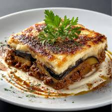
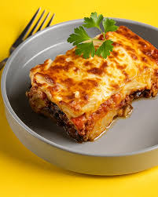

Om moussaka
Moussaka är en klassisk grekisk maträtt med aubergine, potatisar, köttfärs och béchamelsås.
Ingredienser
- 3 auberginer
- 500 g köttfärs
- 3 potatisar
- 1 lök
- 2 tomater eller tomatsås
- Salt, peppar och kanel
- Béchamelsås
Tillagning
- Skala potatisarna och skär dem i skivor. Stek eller baka dem tills de blir mjuka.
- Gör samma sak med auberginerna.
- Stek köttfärsen med lök, tomat och kryddor.
- Lägg potatis som första lager i formen, sedan aubergine och köttfärs i lager.
- Häll béchamelsås ovanpå och baka i ugnen på 180°C tills ytan blir gyllene.

